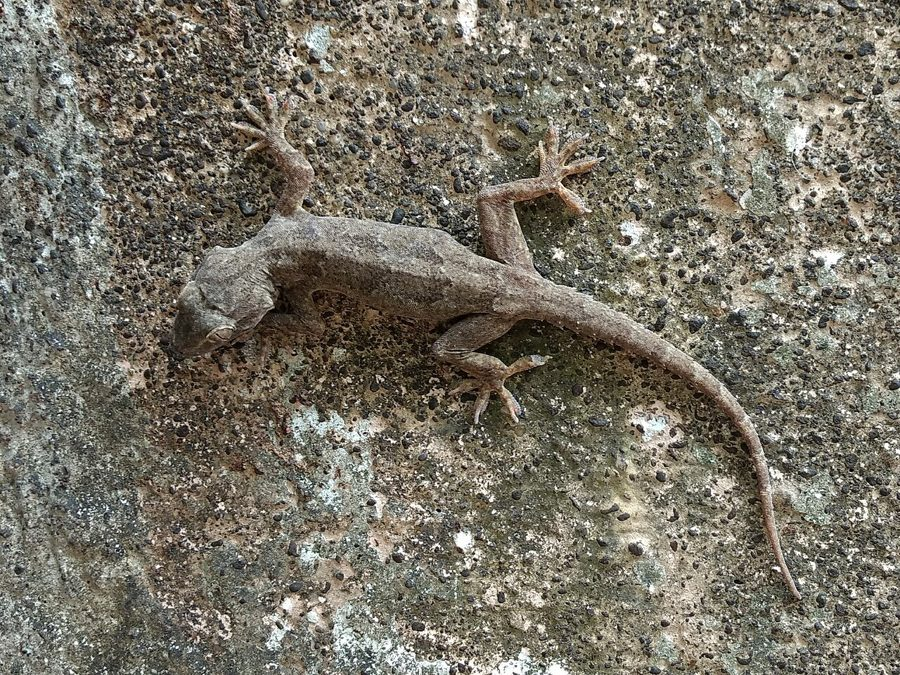

लेशेनॉल्ट्स लीफ-टोएड गेकोLeschenault's Leaf-toed Gecko
Hemidactylus leschenaultii · Gekkonidae · REP-0043

- Scientific name वैज्ञानिक नाम
- Hemidactylus leschenaultii Duméril & Bibron, 1836
- Family कुल
- Gekkonidae
- Hindi हिंदी
- लेशेनॉल्ट्स लीफ-टोएड गेको
- Local names स्थानीय नाम
- leschenaults leaf-toed gecko, leschenault leaf toed gecko, bark gecko, leshenalt chhipkali
- Status here यहाँ की स्थिति
- native
- Movement आवागमन
- Resident, here all year
- Known from कहाँ दर्ज
- Others have published records from the wider Awadh–Purvanchal plain, none yet from Basti–Ayodhya अवध–पूर्वांचल से दूसरों के प्रकाशित अभिलेख, बस्ती–अयोध्या से अभी नहीं
- IUCN IUCN
- not evaluated
- Review समीक्षा
- not yet reviewed
When to look कब देखें
Present all year. साल भर मौजूद।
Uses and possibilities उपयोग और संभावनाएँ
Drawn from the documented uses in the profile below, where each is labelled traditional, current or a research lead. All uses →
Tell it apart from इनसे अलग पहचानें
लेशेनॉल्ट्स लीफ-टोएड गेको / Leschenault's Leaf-toed Gecko
Hemidactylus leschenaultii Duméril & Bibron, 1836 — Gekkonidae
लेशेनॉल्ट्स लीफ-टोएड गेको — यह एक बड़ी और सुगठित छाल पर रहने वाली छिपकली है जो पुराने पेड़ों के तनों पर पाई जाती है। इसका शरीर राख जैसे धूसर रंग का होता है जिस पर गहरे भूरे रंग की लहरदार धारियां बनी रहती हैं जो पेड़ की छाल से पूरी तरह घुलमिल जाती हैं। यह रात में पेड़ों पर चढ़ने वाले कीड़ों का शिकार करती है और दिन में छाल की दरारों में छिपती है।
Quick Identification त्वरित पहचान
| Feature | Description |
|---|---|
| Body size | Large, robust arboreal gecko with a broad head and stout limbs |
| Dorsal scalation | Uniformly fine granular scales, lacking enlarged keeled tubercles on the back (Smith 1935) |
| Coloration | Ashy grey or brownish-grey with a series of dark brown undulating W-shaped dorsal bands |
| Head pattern | A dark streak passing through the eye and continuing onto the shoulder |
| Digits | Strongly dilated pads with divided lamellae underneath, adapted for gripping bark |
| Tail | Moderately depressed, slightly swollen at the base, with small flat scales |
Field tip: Inspect the furrowed trunks of old mango, neem, and tamarind trees with a torch beam at head height after twilight.
हिंदी: इसकी त्वचा पर गहरे भूरे रंग के लहरदार निशान होते हैं जो पेड़ की छाल जैसे दिखते हैं। इसकी उंगलियां चौड़ी और चिपचिपी होती हैं जिससे यह तनों पर तेजी से दौड़ती है।
Morphology आकारिकी
Biometrics as given by Smith (1935):
| Measurement | Value | Source |
|---|---|---|
| Snout-to-vent length | 83 mm | Smith (1935) |
| Tail length | 83 mm | Smith (1935) |
The head is large, ovate, and depressed, distinctly demarcated from the neck, with a snout longer than the orbit diameter. The forehead has a distinct median concave depression. The ear opening is suboval and oblique. Rostral shield is quadrangular, broader than high, with a prominent median cleft. The nostril is bordered by the rostral, first supralabial, and three nasal scales. Upper labials number 10 to 12 and lower labials 8 to 10. The mental is broadly triangular, twice as long as the adjacent labials, bordered by two pairs of well-formed postmentals. The dorsum is covered entirely by minute, uniform granular scales without enlarged keeled tubercles, although a few scattered rounded tubercles may appear near the flanks in some regional populations (Sharma 2002).
हिंदी: इसका सिर भारी और चपटा होता है और आंखें बड़ी होती हैं। पीठ पर खुरदुरे कांटों की जगह महीन दानेदार चिकने शल्क होते हैं। पूंछ चपटी और सिरे की ओर पतली होती है।
Behaviour & Ecology व्यवहार और पारिस्थितिकी
This gecko is an obligate arboreal specialist of mature trees, exhibiting strong fidelity to large, rough-barked species such as Mango (Mangifera indica), Peepal (Ficus religiosa), and Banyan (Ficus benghalensis). By day, it presses its flattened body tightly into deep bark crevices, hollows, or behind peeling slabs of bark, where its cryptic grey-and-brown disruptive pattern provides superb camouflage against diurnal predators. Shortly after nightfall, it moves out onto exposed trunks and primary limbs to forage. It maintains a head-down perching posture while scanning the trunk surface for approaching invertebrates. If disturbed, it darts with remarkable agility into high canopy branches rather than descending to the soil.
हिंदी: यह छिपकली अपना अधिकांश जीवन बड़े पेड़ों के तनों पर बिताती है। दिन के समय यह तने की खोह या छाल की दरारों में चिपकी रहती है और रात होते ही शिकार के लिए बाहर आती है।
Life Cycle / Phenology जीवन चक्र
Reproductive activity peaks during the hot summer and pre-monsoon months from March to July. Courtship involves vocal chirps and tail-waving displays between territorial males and visiting females. The female deposits clutches of two large, hard-shelled calcareous eggs inside sheltered tree hollows, underneath loose bark, or occasionally in deep crevices of nearby masonry. Multiple females frequently utilize communal oviposition sites across several breeding seasons, resulting in clusters of adhering hatched eggshells within favoured hollows. Hatchlings emerge after six to nine weeks, fully equipped with functional adhesive pads.
हिंदी: गर्मी के महीनों में इसका प्रजनन होता है। मादा पेड़ों की खोह या छाल के नीचे दो मजबूत खोल वाले गोल सफेद अंडे देती है। कभी-कभी एक ही खोह में कई मादाएं अंडे देती हैं।
Host Plants or Prey आहार
The species feeds opportunistically on a wide range of arboreal insects and other invertebrates found on tree trunks. Major prey items include large noctuid and erebid moths resting on bark, tree crickets, mantids, longhorn beetles, and blattid roaches. It also consumes crawling caterpillars and wandering spiders that ascend trunks after sunset. It stalks prey with slow, calculated movements before executing a rapid forward strike, crushing heavily sclerotized prey with its muscular jaws.
हिंदी: इसका आहार पेड़ों पर पाए जाने वाले बड़े पतंगे, लकड़ी के कीड़े, झींगुर, तिलचट्टे और मकड़ियां हैं। यह तने पर शांति से बैठकर कीड़े के नजदीक आने का इंतजार करती है।
Predators / Natural Enemies शत्रु
Nocturnal avian predators include the Spotted Owlet (Athene brama), which routinely perches in mature orchards to snatch active bark geckos. Arboreal colubrid snakes such as Forsten's Cat Snake (Boiga forsteni) and the Common Trinket Snake (Coelognathus helena) forage systematically through canopy limbs and tree hollows for sleeping or hunting geckos. Diurnal monitor lizards such as the Bengal Monitor (Varanus bengalensis) search deep trunk crevices during daylight hours.
हिंदी: उल्लू और पेड़ पर चढ़ने वाले सांप रात में इसका शिकार करते हैं। दिन में गोह या बाज इसके छिपने के स्थानों में खोजबीन कर इसे पकड़ सकते हैं।
Agricultural / Human Relevance कृषि प्रासंगिकता
In rural agro-ecosystems, this bark gecko serves as a natural biological control agent within commercial fruit orchards, particularly in traditional mango and guava belts across the Gangetic plain. By consuming bark-boring beetle adults, wood-infesting caterpillars, and phytophagous bugs, it contributes to orchard canopy health without chemical intervention. It rarely enters domestic living quarters, remaining harmlessly restricted to orchard trees, garden timber, and old estate boundaries.
हिंदी: आम और अमरूद के बागों में यह तनों को नुकसान पहुंचाने वाले कीड़ों को खाकर बागबानों की मदद करती है। यह घरों में नहीं आती और इंसानों के लिए पूरी तरह हानिरहित है।
Expected Locally स्थानीय रूप से अपेक्षित
Not a field record. Written from published accounts for eastern Uttar Pradesh. No confirmed local sighting yet — if you have seen it, that is what the atlas needs.
अभी तक स्थानीय पुष्टि नहीं। यह विवरण प्रकाशित स्रोतों से है, किसी अवलोकन से नहीं।
In the Basti–Ayodhya region, search efforts should target mature mango topes (aam ke bagh), ancient roadside peepal trees, and heritage groves with deeply fissured bark. Torchlit night walks along orchard perimeters during warm pre-monsoon and monsoon nights from May to September offer the highest probability of observation. GBIF holds published records from the wider Awadh–Purvanchal plain, none yet from Basti–Ayodhya. A first confirmed record would be established by obtaining a clear photograph showing the dorsal wavy banding pattern and smooth granular scalation submitted through the citizen science portal.
Distribution वितरण
Global range: Widespread across the Indian subcontinent and Sri Lanka, extending through peninsular and northern India.
In India: Found across peninsular India, Maharashtra, Madhya Pradesh, West Bengal, Bihar, and the northern plains of Uttar Pradesh and Rajasthan.
In Uttar Pradesh: Recorded from forested tracts and mature arboricultural plantings in central and eastern districts.
In Basti district / eastern UP: Expected in extensive mango orchards, temple groves, and riverine forest remnants throughout the Ghaghara basin.
हिंदी: यह भारत और श्रीलंका में व्यापक रूप से पाई जाती है। उत्तर प्रदेश के मध्य और पूर्वी जिलों के पुराने बाग-बगीचों में इसकी उपस्थिति दर्ज है।
Research Questions शोध प्रश्न
- Which native tree species host the highest population densities of this gecko in Awadh orchards? / अवध के बागों में किन देसी पेड़ों पर इस छिपकली की संख्या सबसे अधिक पाई जाती है?
- Does the presence of artificial orchard lighting alter trunk foraging heights and prey selection? / क्या बागों में लगी कृत्रिम रोशनी इसके शिकार करने की ऊंचाई और व्यवहार को बदलती है?
- How do communal egg deposition sites inside old tree hollows maintain viable thermal and moisture levels?
- What is the extent of dietary overlap between this species and the sympatric Northern House Gecko when both occupy garden outbuildings?
- Can local farmers distinguish this harmless bark gecko from venomous myths through orchard workshops? / क्या किसान गोष्ठियों के माध्यम से इस हानिरहित छिपकली को पहचानना सीख सकते हैं?
Similar Species मिलती-जुलती प्रजातियाँ
| Species | How to tell apart | हिंदी | |
|---|---|---|---|
| Northern House Gecko \ | Hemidactylus flaviviridis | Inhabits buildings and plastered walls; dorsum is yellowish-grey with diffuse faint bands and lacks prominent wavy dark chevrons (Sharma 2002) | उत्तरी घरेलू छिपकली मकानों में रहती है और इसका रंग हल्का पीला-भूरा तथा पीठ चिकनी होती है |
| Brooke's House Gecko \ | Hemidactylus brookii | Much smaller with heavily tuberculated, rough dorsal skin bearing 14 to 16 rows of sharp trihedral keels (Smith 1935) | ब्रुक्स गेको काफी छोटी होती है और इसकी पूरी पीठ पर कांटेदार खुरदुरे दाने होते हैं |
| Asian House Gecko \ | Hemidactylus frenatus | Possesses scattered dorsal tubercles, smaller adhesive digital pads, and distinct pinkish or orange hues on the tail underside | साधारण घरेलू छिपकली के पैर कम चौड़े होते हैं और पूंछ का निचला हिस्सा गुलाबी या नारंगी होता है |
Field rule: Large tree-dwelling gecko on rough bark with wavy dark W-shaped dorsal chevrons and a back covered in fine, smooth granular scales.
हिंदी: यह पेड़ों की छाल पर रहने वाली बड़ी छिपकली है जिसकी पीठ पर गहरे लहरदार निशान होते हैं और कांटेदार दाने बिल्कुल नहीं होते।
Taxonomy & Classification वर्गीकरण
Original description. Duméril & Bibron (1836), Erpétologie générale ou Histoire naturelle complète des Reptiles, Tome 3, p. 344; type locality: Ceylon (Sri Lanka) and Coromandel coast, India.
Subspecies. Nominal form the nominal form is recognised across the Indian mainland.
Family and order placement. Belongs to the family Gekkonidae, infraorder Gekkota, within the squamate suborder Sauria.
Phylogenetic notes. Molecular studies place it within the broad tropical Asian Hemidactylus radiation, occupying an arboreal bark-dwelling niche parallel to African tree geckos.
IUCN status rationale. Not evaluated by the IUCN Red List; abundant and widely distributed across diverse agricultural and forested landscapes of South Asia.
हिंदी: इसका वैज्ञानिक नाम फ्रांसीसी जीवविज्ञानी डुमेरिल और बिब्रोन ने 1836 में रखा था। यह गेक्कोनिडे कुल का सदस्य है।
Photo Gallery फोटो गैलरी
No photos yet — add field photos to media/species/leschenaults_leaf_toed_gecko/ and run node scripts/sync_photos.js.
Photos needed आवश्यक फोटो
- [ ] Habitat view showing typical local microhabitat (प्राकृतिक वास का विस्तृत परिदृश्य)
- [ ] Individual camouflaged against furrowed mango bark (आम के तने पर छलावरण बनाए छिपकली)
- [ ] Close-up of dorsal pattern showing dark wavy chevrons (पीठ के गहरे लहरदार निशानों का क्लोज-अप)
- [ ] Ventral view of foot demonstrating broad scansors (पंजे की चौड़ी चिपचिपी गद्दियों का दृश्य)
References संदर्भ
- Original description: Duméril & Bibron, 1836 — see GBIF.
- Smith, M. A. (1935). The Fauna of British India, Including Ceylon and Burma. Reptilia and Amphibia. Vol. II.—Sauria. Taylor and Francis, London.
- Sharma, R. C. (2002). The Fauna of India and the Adjacent Countries. Reptilia (Sauria). Volume II. Zoological Survey of India, Kolkata.
- GBIF Occurrence Data — Hemidactylus leschenaultii, India (2025).
Source file: species/fauna/reptiles/leschenaults_leaf_toed_gecko.md